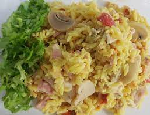

Caya Chilena
Esta receta fué heredada por mi bisabuelo cuando terminó de matar a todos los mapuches de la patagonia y se radicó en Mendoza, es una comida facil de hacer y mu rica

Ingredientes
- una seboya
- un morron
- un arros
- un poyo
- jamon
- crema
Preparación
- ponemos la cebolla cortada chiquita
- metemos el morron
- metemos el poyo
- tiramos agua y metemos el arros
- lo dejamos hacer y despues le mandamos la crema y el jamon
muy bien maestro, ya tenes tu caya

sigan viendo